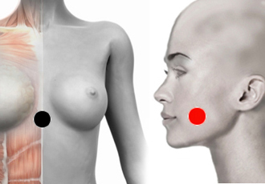

Triquinosis
Pares
hiato esofágico - lengua
píloro - lengua
lengua - timo

NOTA: Verificar qué lado de la lengua impactar: derecho o izquierdo.
Generalidades:
Triquinosis Causada por el nematodo Trichinella Spiralis. Provoca fiebre, dolor muscular y articular y leucocitos elevados. Tiene afinidad por el músculo estriado.
Las larvas de la Triquinela se encuentran en distintos animales como cerdo, morza, zorro, rata, caballo y león. Al comer carne contaminada y sin cocer de alguna de estas especies se trasmite la larva, que más tarde infecta el organismo, afectando principalmente al aparato digestivo y al músculo estriado. También afectan a la sangre. Las infecciones más complejas involucran al corazón, pulmones y/o cerebro.
Transmisión:
Por comer carne infectada y sin cocer (cerdo el más común).